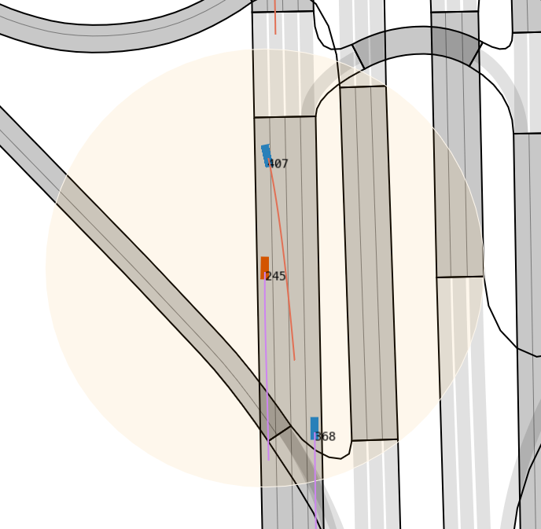

Replay & Interactive Replay
Replay is an important feature of simulation programs that can help us deeply analyze hazardous and failure scenarios, enabling us to optimize relevant algorithms. LimSim also provides a replay feature, allowing us to replay data generated from real-time simulations. Building upon this, we offer interactive replay functionality to aid algorithm updates and iterations in critical scenarios.
Simulation Replay¶
In the root directory, running the following command will invoke LimSim's replay feature:
Interface Layout¶
The above command will bring up the interface for replay functionality, as shown in the following image:

As you can see, compared to real-time simulation, the replay interface has an additional control panel. This panel allows controlling the start, pause, and speed of the replay, facilitating a detailed view of critical simulation aspects. Additionally, in Area B, you can see a pink curve in front of the vehicle. This curve represents the future trajectory of the vehicle recorded in the database, and the vehicle will travel precisely along this pink curve. We refer to it as dbTrajectory. On the other hand, the trajectory provided by the trajectory planning algorithm is represented by the purple curve, known as plannedTrajectory. In Area C, when displaying the vehicle's state at time 0, on the right side, it shows the vehicle's speed and acceleration as recorded in the database.
Example Analysis¶
The example code for simulation replay is straightforward, as shown below:
 Since there is no need to exchange data with SUMO, only running
Since there is no need to exchange data with SUMO, only running rmodel.moveStep()is sufficient.
Interactive replay¶
The initialization of simulation replay only requires specifying the database, and no interaction with external elements is necessary. Therefore, the code in this example is relatively simple.
During the process of autonomous driving test simulation, some dangerous and failure scenarios may occur. These scenarios are important sources of data for upgrading autonomous driving tests. Therefore, retesting on dangerous scenarios is an important function. However, if only Ego is re-controlled and the surrounding vehicles do not respond to Ego's behavior, the test loses its original meaning. Therefore, LimSim provides an interactive replay function that allows users to iterate algorithms in dangerous scenarios.

Interactive simulation requires planning new trajectories for vehicles in the scene, which also requires handling conflicts between new and old trajectories. As shown in the figure above, there is no conflict when the two cars drive according to the original trajectory, but when ego changes its trajectory, it may collide with other vehicles. At this time, other vehicles need to respond to avoid collisions, that is, to drive along the purple trajectory shown in the figure. However, when ego is far away from this scene, the vehicle that was just controlled faces a problem-whether to return to the original trajectory. If it returns to the original trajectory, it will cause a sudden change in position and may cause new conflicts. If it does not return to the original trajectory, the subsequent trajectory of the vehicle will be gone and can only stop in place or disappear.
LimSim solves the above problems by dividing them into three sub-problems: 1. When to plan a new trajectory for a vehicle; 2. How long should the planned trajectory last; 3. How to deal with this vehicle after the trajectory planning is over.
Firstly, planning a new trajectory for a vehicle is not as early as possible. If a new trajectory is planned for a vehicle as soon as it is generated, then the degree of data utilization is too low and only the position where the vehicle is generated is used. Therefore, LimSim uses collision detection to determine whether a new trajectory needs to be planned for a vehicle. If the original trajectory of a vehicle conflicts with the new trajectory of another vehicle (the vehicle must be within AoI first), then a new trajectory needs to be replanned for the vehicle, otherwise it will maintain its original trajectory.
Secondly, after a vehicle loses control, it either jumps back to its original trajectory or stops in place or disappears. These two forms obviously greatly reduce the coherence and effectiveness of simulation. Therefore, LimSim will judge whether the out-of-control vehicle is still within AoI. If the vehicle is still within AoI, even if there is no longer a conflict, LimSim will continue to plan its trajectory until it leaves AoI. This is mainly to ensure that the scene within AoI is coherent, while vehicles outside AoI have little impact on ego.
Thirdly, when a vehicle no longer needs interaction and leaves AoI, the control stage ends. At this time, if you let the vehicle return to its original trajectory, it may collide with other vehicles. Therefore LimSim chooses to directly destroy this car. If there is still remaining trajectory of this car in the dataset, it will regenerate this car at the corresponding time. It should be noted that when LimSim generates a vehicle, it will judge whether this car will conflict with existing cars in the road network. If there is no conflict, generate a car; otherwise delay until next time.
Collision Detection
General collision detection algorithms use separation axis theorem to determine whether two rectangles intersect. This method can determine whether two cars collide at a certain moment. But in simulation we need to leave enough reaction time for vehicles. For example when car A generates there is a car B driving 3 meters ahead even if these two cars do not collide at this moment there is still a high probability of conflict between them in future seconds. Therefore LimSim will use future trajectories (dbTrajectory or plannedTrajectory) of vehicles for collision detection to avoid potential conflicts.
Simulation example¶
After introducing implementation methods run following command can run interactive simulation example:
If above command runs normally same graphic interface will be called out as well. The overall structure of graphic interface consistent with real-time simulation only slightly different in B area. As shown below curve in front of car has pink and purple two kinds corresponding respectively dbTrajectory and plannedTrajectory mentioned earlier. If car drives according to database’s trajectory dbTrajectory displays if controlled by decision planning algorithm plannedTrajectory displays.

Example code as follows:
from trafficManager.traffic_manager import TrafficManager
from simModel.egoTracking import interReplay
irmodel = interReplay.InterReplayModel(
dataBase='egoTrackingTest.db',
startFrame=4000
)
planner = TrafficManager(irmodel)
while not irmodel.tpEnd:
irmodel.moveStep()
if irmodel.timeStep % 5 == 0:
roadgraph, vehicles = irmodel.exportSce()
if roadgraph:
trajectories = planner.plan(
irmodel.timeStep * 0.1,
roadgraph, vehicles
)
else:
trajectories = {} # (1)
irmodel.setTrajectories(trajectories)
else:
irmodel.setTrajectories({})
irmodel.gui.destroy()
 When running interactive replay,
When running interactive replay, irmodel.setTrajectories()function is necessary even if no trajectory planned empty dictionary needs to be passed in.
Example code overall not much different from real-time simulation replace road network file and path file with corresponding database.